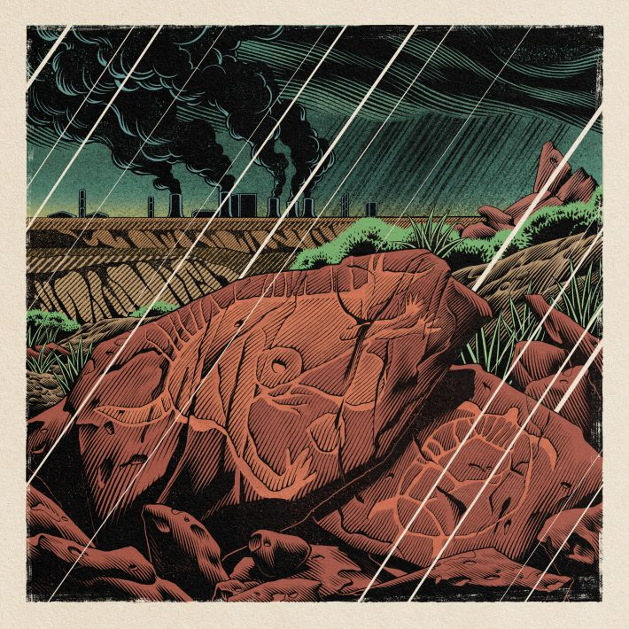
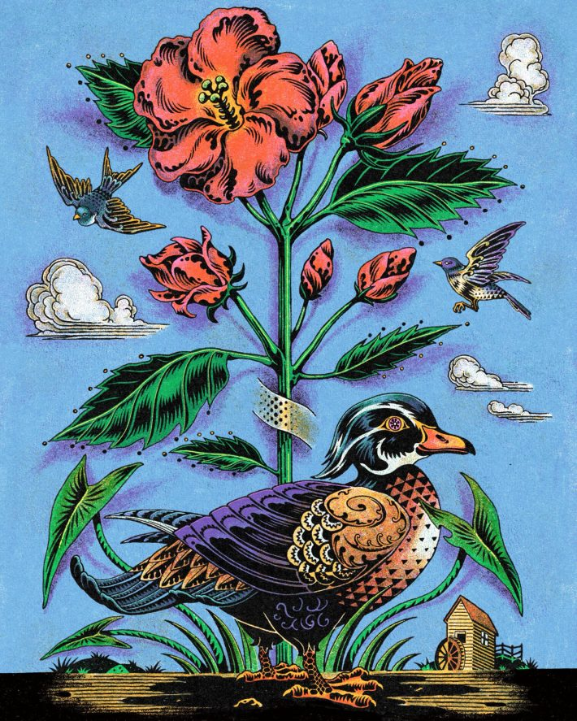
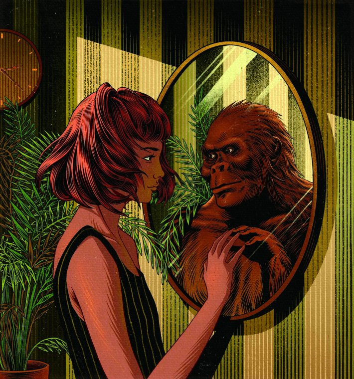
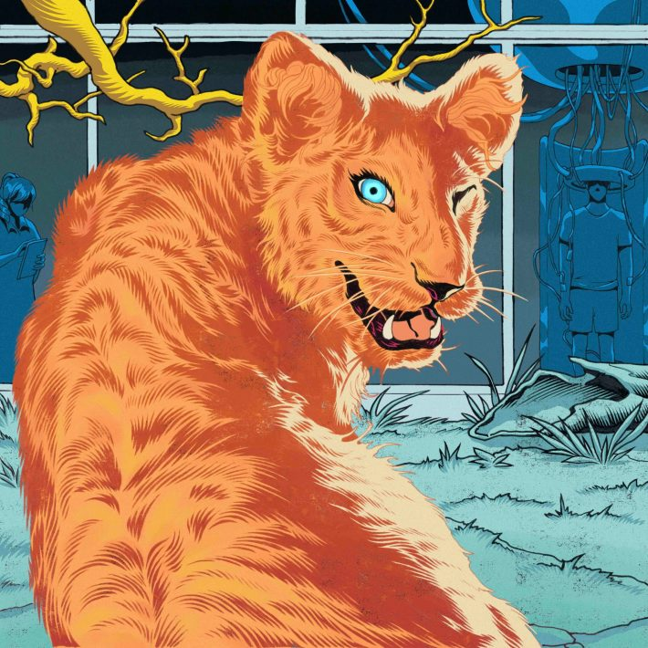

This article is part of series of Nautilus interviews with artists, you can read the rest here.
With deep lines and bold colors, artist Yiran Jia creates sci-fi art with an elevated graphic novel aesthetic. Even though she imagines fantastical worlds that could be, she draws inspiration from the world as it is. “Drawing from real life makes me feel some kind of participation in the world,” she told us. Her work has appeared in Wired, Foreign Affairs, and Nautilus (one of her first commissions). She recently sat down to answer our questions about her creative process, the struggles of illustrating short texts, and what scientists can learn from artists.
What drew you to the arts in the first place?
It’s simply because I love drawing. I remember when I was little, I just kept drawing—either my surroundings or imagined things. Even though I’m now working as an illustrator and there are tons of reference pictures on the internet, I still prefer to go out and draw from real-life observations, and often some of my sketches will end up in my illustrations. I think it’s just because drawing my surroundings or drawing from real life makes me feel some kind of participation in the world, which makes me keep going and always feel inspired.

Image courtesy of Yiran Jia.
How would you describe your aesthetic?
My aesthetic is a combination of influences from 1970s comics, woodcut and wood engraving, and decorative arts from different cultures, often done with dip pen drawing and digital coloring. The content of my work ranges from social issues, technology, and environment to science fiction and fantasy.

Image courtesy of Yiran Jia.
How do you work through a creative block?
I try not to overthink during creative blocks, I guess. Usually, I’ll just go out and visit museums and draw—learn how other artists see things, and stylize things. Reading is also a big part of any creative process, which helps keep my mind grounded and gives me a clearer understanding of why I would use certain techniques or methods to deal with the information in my work. Talking to other illustrators about how we are planning our career paths is a big help, too. It provides some directions on how to adjust. It’s more about accumulating various experiences during creative blocks and just having fun.
You created the cover for Nautilus Issue 44 about the human ancestor Australopithecus; what about that story captured your imagination?
The article focused on the comparison of how our ancestors survived in nature and our current ways of dealing with nature, so I used the mirror as a metaphor for reflection and introspection. The setting was a room with a clock on the wall and a plant in the corner, with a girl standing in front of the mirror staring at the reflection of the human ancestor. Since the article is more focused on humans’ way of living and how their relationship with nature has changed, I intentionally made the plant and the clock as objects to show that, compared to the speed of human evolution, nature has always been there and changing slowly.

Nautilus: Issue 44 cover. By Yiran Jia.
Is there anything you think scientists can learn from artists—or vice versa?
The most difficult question to answer so far! I always tend to think both art and science are different types of subjective experiences. While artists take them on a personal level of understanding, scientists measure the world for practical use, but still within the abstract rules and systems created by humans. I honestly have nothing to say to scientists or advice to give. I guess, no matter the personal or practical reasons, the world is just there, and we should learn to appreciate it.
You illustrated six-word sci-fi stories for Wired. What’s your process for illustrating such a short text?
That series was really fun—it wasn’t like the usual editorial commissions. With only six words in each story, every word has its meaning and purpose in the small narrative. For example, there’s this story I illustrated, and I like it. The prompt was, “An unexpected medical breakthrough.” The story was, “Try blinking with her eyes, sir.” This conflict and unsettling feeling is being created within six words—somehow, this guy can see the world through a female perspective. I was thinking about how I could make the conflict more extreme, both literally and visually. There’s this gap between the effect of the story and the meaning of words, so I was trying to contrast these two elements by exploring the interpretation of the words. The first thing that came into my mind is both the “sir” and “her” in the story being represented as human; it would work, but that’s just plain. Then I imagined maybe “she” could be interpreted to be nonhumans, animals, or androids, which would enrich both the story and the illustration so much better. I ended up interpreting the story to be in a lab, with an experiment on the consciousness of a man being transferred into a female lion.

Wired: An unexpected medical breakthrough. Image courtesy of Yiran Jia.
The rise of generative AI services like Midjourney is causing some controversy in the art world. What are your thoughts on the use of AI to create art?
Honestly, I only played around with Midjourney once or twice in 2022, and that’s it. I found using it to generate images quite boring since it’s more of an information-gathering tool. From an illustrator’s perspective, I love AI that makes software easier to use. As for the creative process, I don’t see that it helps that much. But it does provide some insights when we generate something either aesthetically repulsive or morally questionable. We could ask questions about why it sums up all the information or existing images and ends up with things like that. I think through this we could find some perspective about where problems lie in the existing art world.
Do you have any upcoming projects you’re excited about?
I have plans to make a comic book-like book. Influenced by abstract comics, I want to explore how to use basic parameters of comics, such as panels and the overall design of the structure of the page, to tell a wordless story. However, my current style is not concise enough to adapt to comic forms, so I’ve got to simplify my style first. Hopefully, I will put together a graphic novel in the future.
Interview by Jake Currie.
Lead image courtesy of Yiran Jia.